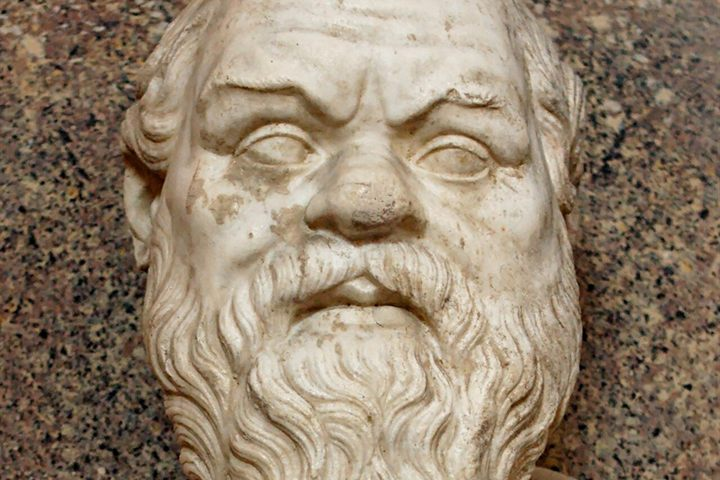
REVIEW
Socratic Metaphysics
Prior’s chapter, its five opponents — and what the Euthyphro is actually committed to
Ti Esti What is it?
Raphael, The School of Athens, 1509–11
Chronology, the elenchus, the priority of definition, and the introduction of the Forms — read from the primary literature.
These are working research documents, not finished publications. Each is self-contained: quotations carry their page, sources are listed at the end, and claims that are mine rather than a cited author’s are marked as such.
Several are long. Each opens with a map of its own argument, and most carry an interactive tree of the whole structure at the end.
Book- and chapter-length reviews of the secondary literature.

Prior’s chapter, its five opponents — and what the Euthyphro is actually committed to
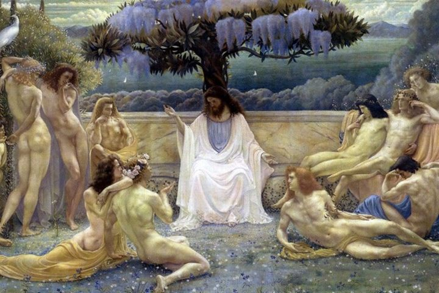
What changes across the dialogues — and what the change is evidence of
Standalone arguments, drafted for submission.
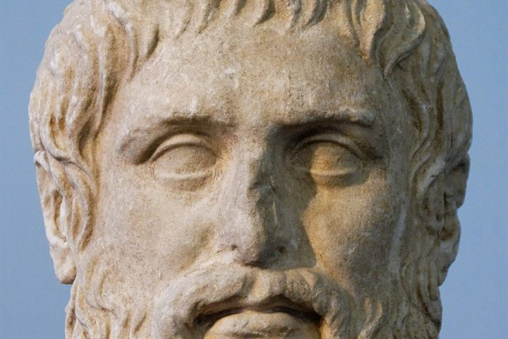
Nails, Thesleff, and the state of Platonic developmentalism
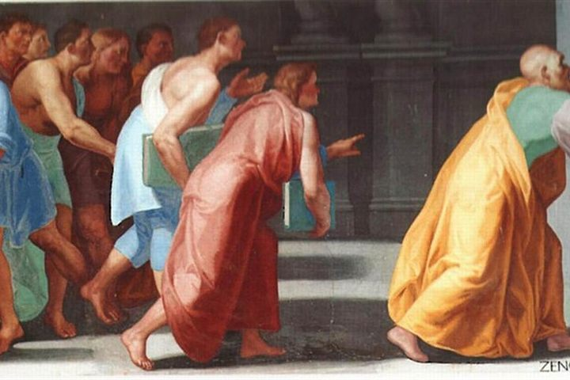
two regresses in the Socratic priority of definition
the paradox of analysis and the Socratic ti esti question
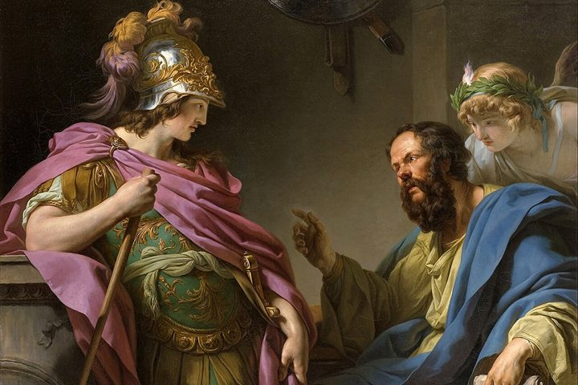
the priority of definition and the regress of erotetic presuppositions
The long working documents each project grew out of.
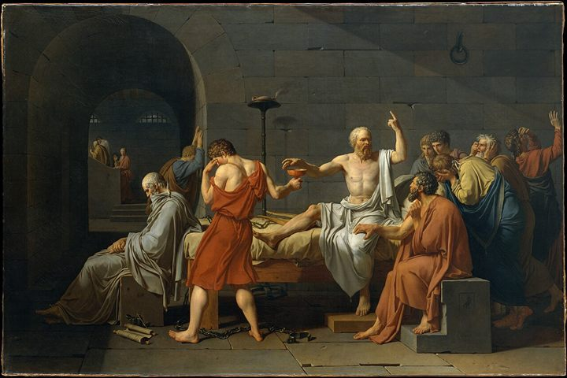
The criterion he does set, the swimming pool, and the page that is quoted by half
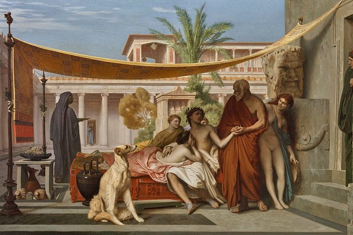
One question, asked from the inside — and the four problems packed inside it, each followed until it either resolved against a text or opened onto ground the literature has not covered.
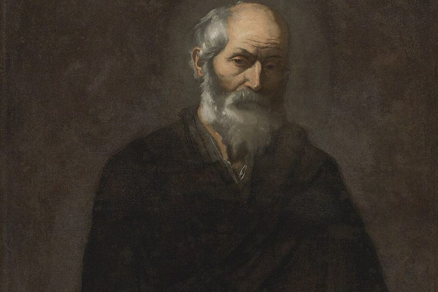
What changes across the dialogues — and what the change is evidence of
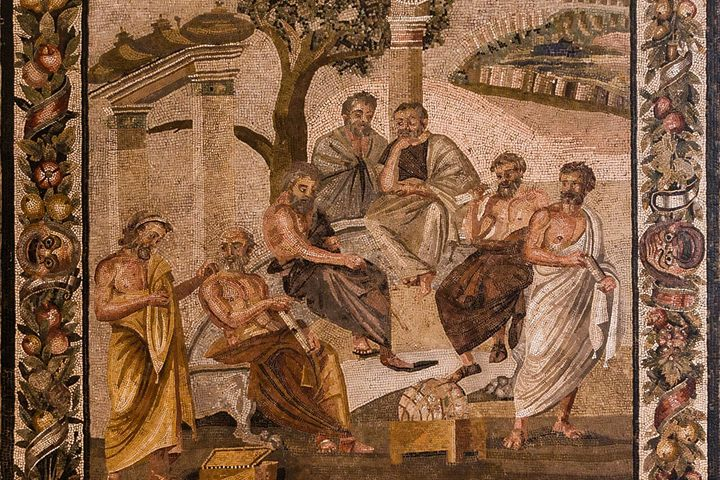
One method, one disavowal, and the debt that only the Forms can settle
Short pieces: corrections, comparisons, single findings.
Your proposal is Belnap and Steel's own equivalence-question — the form Benson calls the accurate one and then sets aside. It is right, and it makes the problem worse.
Meno 78d–79e in Plato's own words, Benson's use of Belnap and Steel, and what a Belnap matrix is not .
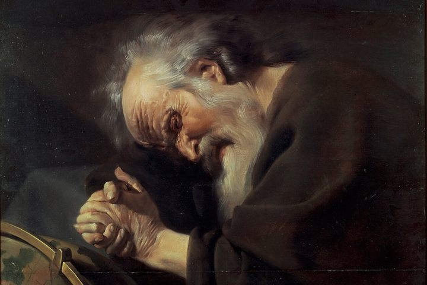
Six formulations of the paradox of analysis, set side by side — and the objection reformulated so that it stands in the same family and can be argued with.
Literature surveys and collected passages.
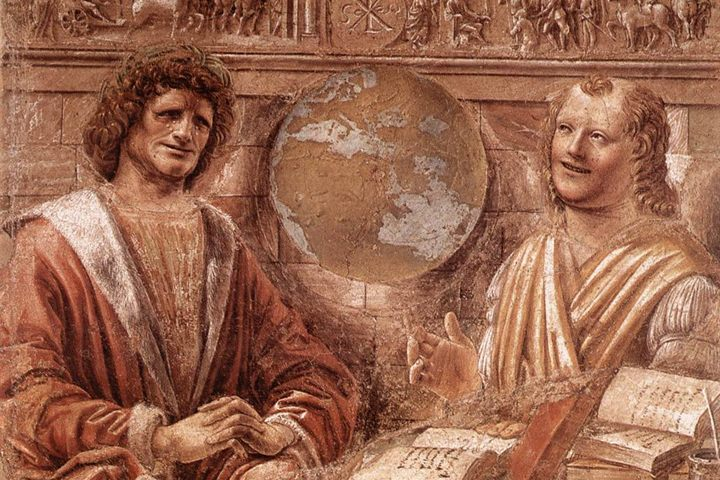
Everything the literature says about the paradox of analysis — and the exact point at which it stops short of the Socratic “What is F?” question.
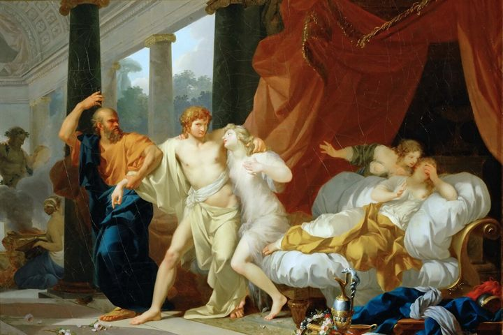
The problem of the elenchus, 1983–2009, in the order and under the headings of David Wolfsdorf’s survey — with each scholar’s own words set beside it.
Where to start, and in what order.
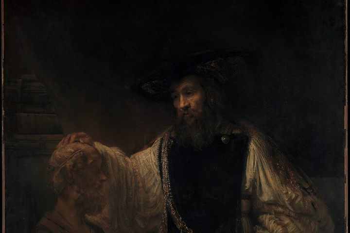
From step zero to the synthesis — what to read, in what order, and which pages
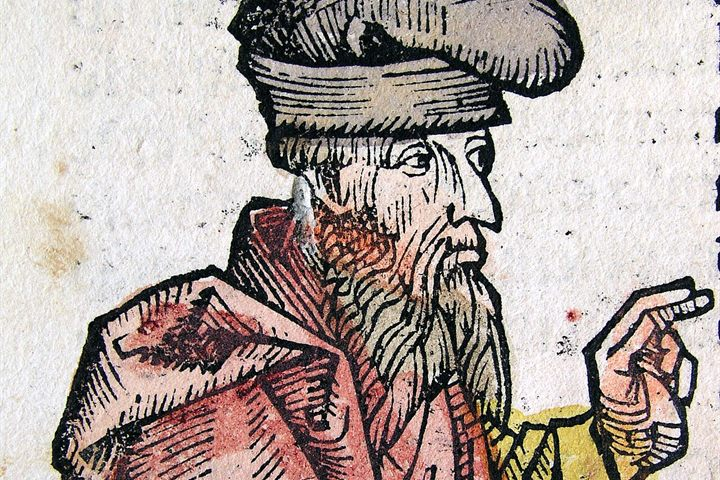
Plato's metaphysics and epistemology — what the field actually argues with
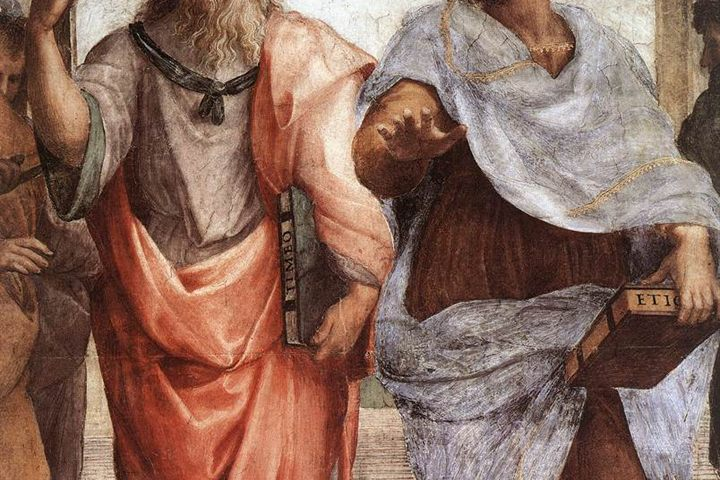
You know Kant, Frege, Quine, Kripke. You know the words Forms , ideal world , allegory of the cave — and not what they mean. This is the shortest honest route from there to reading the scholarship in your folder.
Structure at a glance.
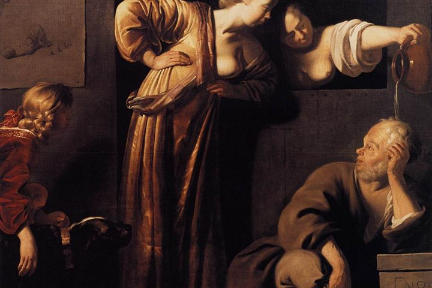
Three tests, all failed — and what follows for reading Plato
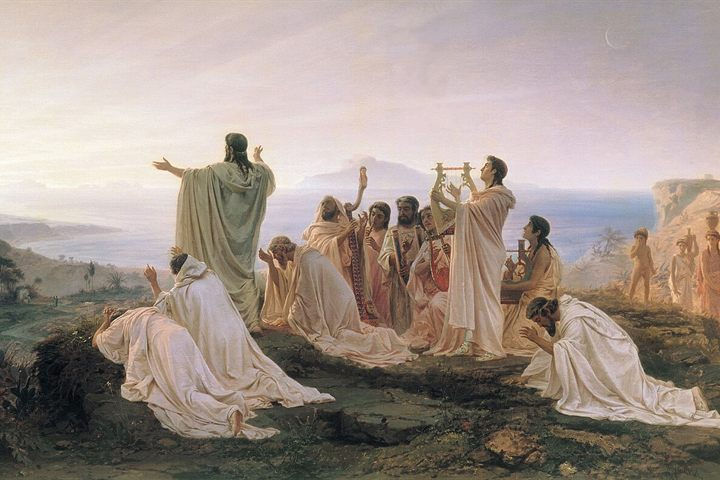
mind map
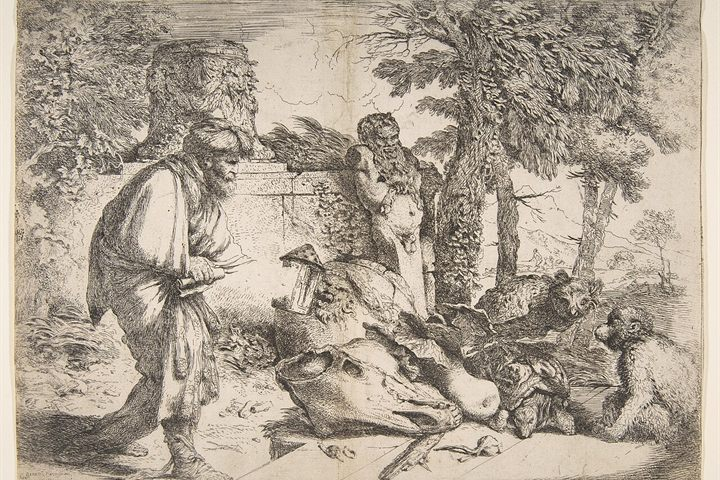
Your diagram, rebuilt from Fine's Introduction — where every scholar actually stands
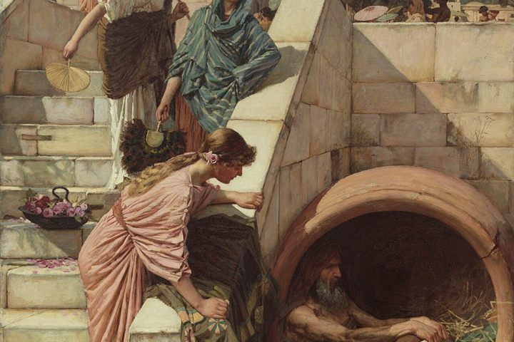
Where Fine actually belongs — and what goes in the slot you gave her
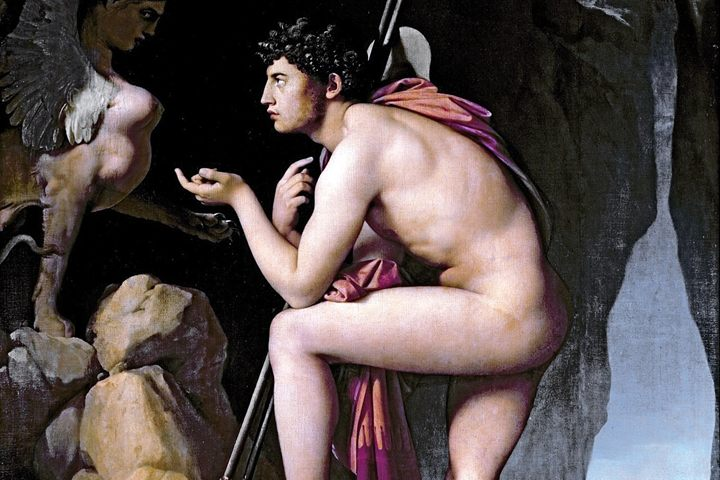
Brill’s Companion to the Reception of Socrates, ed. Christopher Moore (Brill, 2019), ch. 1, pp. 41–74 · argument map in the form if a,b,c,d… then P
Comparisons, disputes and method notes.
එක් ක්රමවේදයක්, එක් දැනුම‑ප්රතික්ෂේපයක්, සහ ආකෘති (Forms) හැර වෙන කිසිවකට ගෙවිය නොහැකි ණයක්
Nozick's challenge, Fine's reply, and where both sit on the Vlastos–Irwin axis
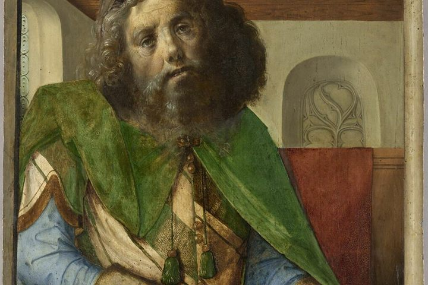
How the Forms become necessary — traced through three chapters
Vlastos's case, move by move — and the texts that carry it
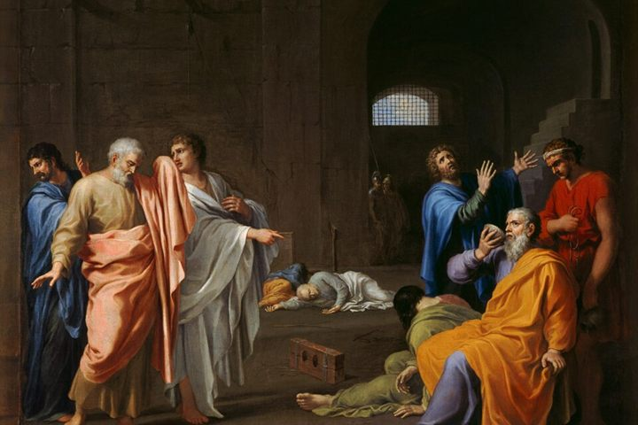
ග්රෙගරි ව්ලාස්ටොස්ගේ තර්කයේ ව්යුහය — සිංහලෙන්
Now the real disagreement is on the table
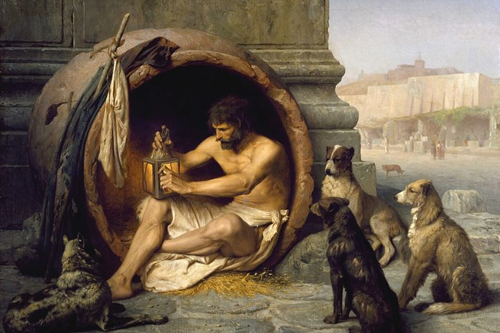
Two accounts of the theory of Forms — and they are not the two sides you expect
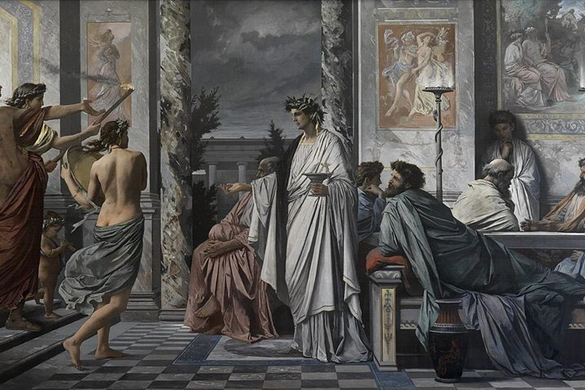
What Plato's theory actually claims, and what it does not
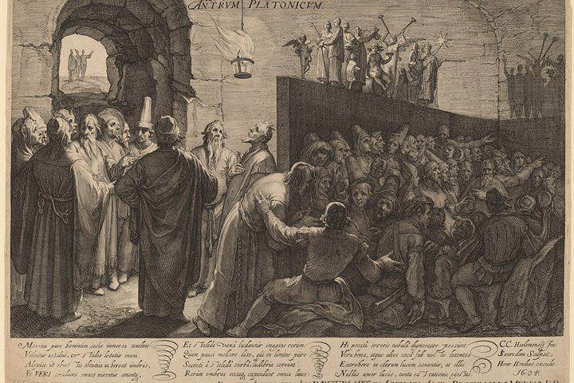
The argument of the Introduction, stage by stage
You asked whether she says the same thing in both introductions. She answers that herself, in print — and the answer is yes, deliberately, with three additions . What follows is the machinery: where she starts, how she reconstructs an argument, how she cites Plato, and how she handles people who disagree.
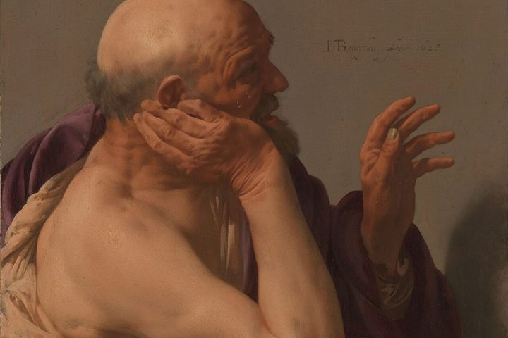
You asked me to open out one line from the anthology. Here is the dispute properly done — every position taken from the actual text of the book it comes from, with what each one commits you to and who it is fighting. Two of them correct what I originally wrote.
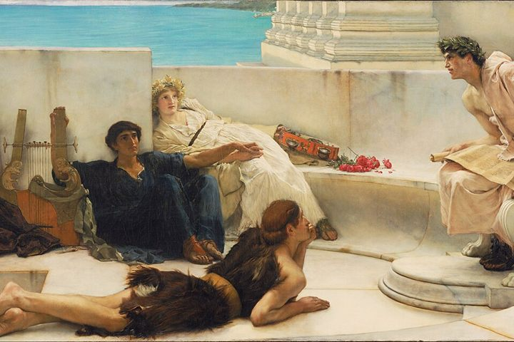
Seven problems, in his words and theirs